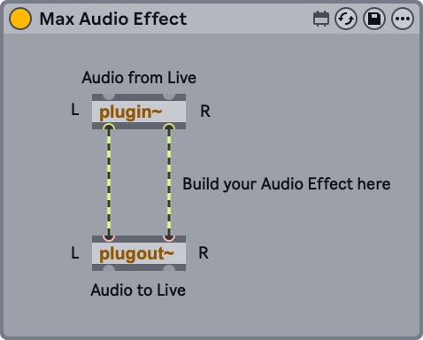
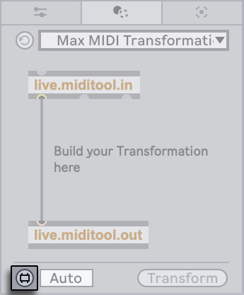

31. Max for Live
With Max for Live, you can extend and customize Live by building your own devices. It provides a comprehensive toolkit for creating instruments, effects, and MIDI Tools, and comes with a collection of built-in devices and tutorials. These devices can be used just like Live’s native devices in a Set and can be edited directly in Max.
You can also use Max for Live to access and modify elements in a Live Set or to expand the functionality of hardware control surfaces via the Live API.
Max for Live is an add-on product co-developed with Cycling ’74 that you can use to access the Max programming environment within Live. Check out the Max documentation to find out more about what is possible with Max.
31.1 Setting Up Max for Live
Max for Live comes bundled as part of Live Suite, as well as Standard when using the Max for Live add-on, and does not need to be installed separately.
If you prefer to use a specific version of the Max application to edit Max for Live devices instead of the bundled version, you can set the corresponding file path in Live’s File & Folder Settings:

Once the path is set, you must restart Live for the change to take effect. After that, the specified Max application will be launched when you open the Max editor from a Max for Live device.
31.2 Using Max for Live Devices
Max for Live comes with a collection of instruments and effects as part of Live’s Core Library. These devices can be found in the Instruments, Audio Effects, MIDI Effects, and Modulators labels in the browser. Modulators are a specific set of devices that can control parameters in Live using modulation signals.
You can access all Max for Live devices, including those from installed third-party Packs and those you have created and saved, in the Max for Live label in the browser. This label also contains Max for Live MIDI Tools, which can be used to transform and generate notes in MIDI clips.
Many Max for Live devices come with their own presets, which work similarly to Live’s device presets, but you can also create your own or edit existing ones as described in the following section.
31.3 Editing Max for Live Devices
Max devices (also known as “patches”) are constructed of objects that send data to each other via virtual cables. The default Max Audio Effect preset, for example, uses this basic setup as a starting point: the plugin~ object receives incoming audio from the effect’s position in the device chain and sends it to the plugout~ object, which passes the signal to any subsequent devices in the chain.

To create a new Max device from one of the defaults, drag a Max Instrument, Max MIDI Effect, or Max Audio Effect from the browser into your Set. You can also edit and customize the objects in any existing Max device presets.
What a Max device actually does depends on the objects that it contains and how they are connected. To access and work with a device’s objects, open the Max editor (also referred to as the “patcher”) by selecting the Edit in Max command in the context menu or the Show Options menu of the device’s title bar.

This launches Max and opens the device in the Max editor.

Prior to Live 12.2, Max devices included an Edit button in the device title bar instead of the Edit in Max command. If you’d like to restore the Edit button functionality, add the -MaxForLiveDeveloperMode option to the Options.txt file.
Once you edit a device, you can save your changes via the Save or Save As command in Max’s File menu. If you have multiple instances of the same device in a Set, the Save command automatically updates all of them with the new changes. If you choose Save As, a dialog appears that asks you to confirm if you want to apply the changes to just the edited preset or to all instances.
By default, a Max device is saved to the relevant folder in the User Library based on its device type: an audio effect is stored in the Max Audio Effect folder, a MIDI effect in the Max MIDI Effect folder, and so on.
It is recommended to always use the default location because Max devices are saved separately as AMXD files rather than as part of a Live Set. Moving or renaming a referenced AMXD file later can break the associated file path in Live. If this happens, you can use the File Manager to locate the file and resolve the issue.
31.4 Building Max for Live MIDI Tools
You can create your own Max for Live MIDI Tools in two ways:
- By using the Max MIDI Transformation or Generator template included in the Transformation and Generative Tools tabs/panels respectively.
- By editing an existing Max for Live MIDI Tool.
Building a Max for Live MIDI Tool follows the same principles as building other Max for Live devices: with a Max MIDI Transformation/Generator template or an existing Max for Live MIDI Tool selected, click on the Edit button to launch the Max editor (“patcher”).

When you are done editing, use the Save or Save As commands in the patcher’s File menu to save the Max for Live MIDI Tool.
By default, Max for Live MIDI Tools are saved to these folders on your computer:
- Transformations: ~/Music/Ableton/User Library/MIDI Tools/Max Transformations
- Generators: ~/Music/Ableton/User Library/MIDI Tools/Max Generators
Alternatively, any folder within Places in Live’s browser can be used to store the MIDI Tools’ AMXD files. For example, you could create a new folder called “My Favorite MIDI Tools” and save the Max for Live MIDI Tools you have built within this folder. Then when you add the folder to Places in Live, these MIDI Tools will appear in the drop-down menus in the Transformation/Generative Tools tabs/panels.
Note that if Max for Live MIDI Tools are not saved to the default location or within Live’s Places, they will not be found by Live’s Indexer, and therefore will not appear in the Clip View’s Transformation/Generative Tools tabs/panels.
For more information on the Max objects used for creating Max for Live MIDI Tools, as well as a walkthrough of patching a Max for Live Transformation or Generator, please refer to the Max for Live MIDI Tools guide, accessible via the Max documentation. In a Max window, select Reference from the Help Menu, navigate to the Max for Live category and then Guides.
31.5 Max Dependencies
As mentioned earlier, there are some special file management considerations when creating presets for Max devices. Additionally, Max devices themselves may depend on other files (such as samples, pictures, or even other Max patches) in order to work properly. Max for Live helps to deal with external dependencies by allowing you to freeze a Max device. A frozen device contains all of the files that are needed to use it.
Note that freezing of Max devices is not the same as Live’s Freeze Track command.
To learn more about freezing, and about how Max deals with managing dependencies for its own files, we recommend reading the built-in Max documentation.
31.6 Learning Max Programming
To help you learn more about building and editing Max devices, Cycling ’74 provides comprehensive documentation and tutorials built into the Max environment. To access this documentation, select “Reference“ from the Help menu in any Max window. There is also a Max for Live section within the documentation contents.
You can also read the Max for Live Production Guidelines documentation on GitHub.
For hands-on learning, we suggest downloading the Building Max Devices Pack, which contains in-depth lessons that cover all the steps you need to build your own Max tools.
Additionally, you can check out the Learn Max page from Cycling ’74 for a comprehensive collection of learning resources.